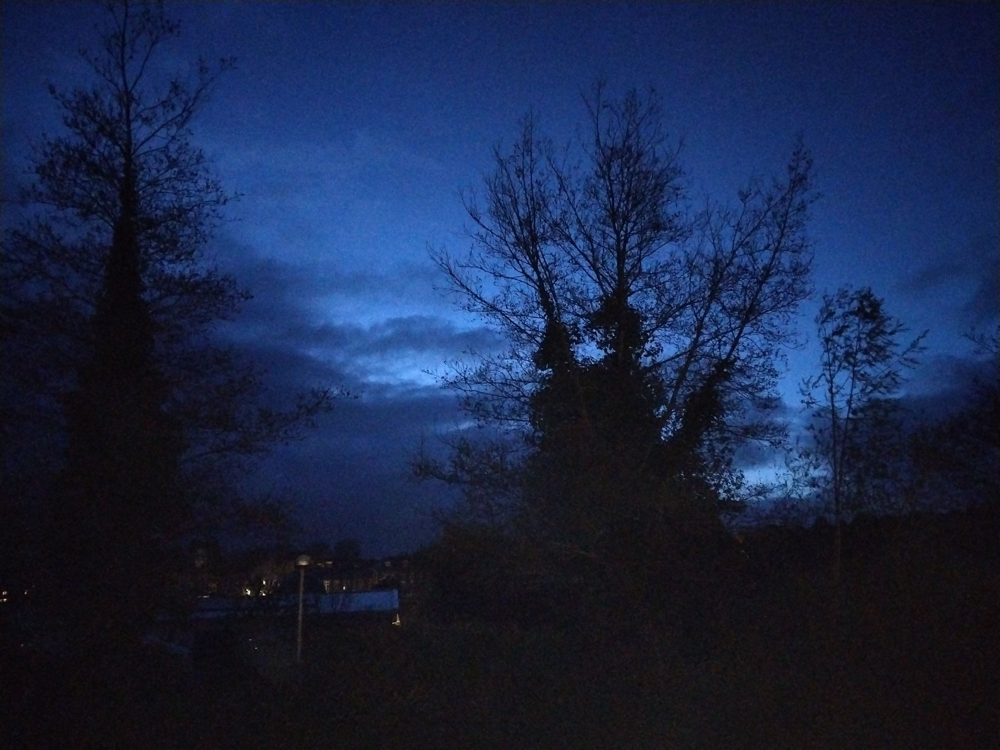
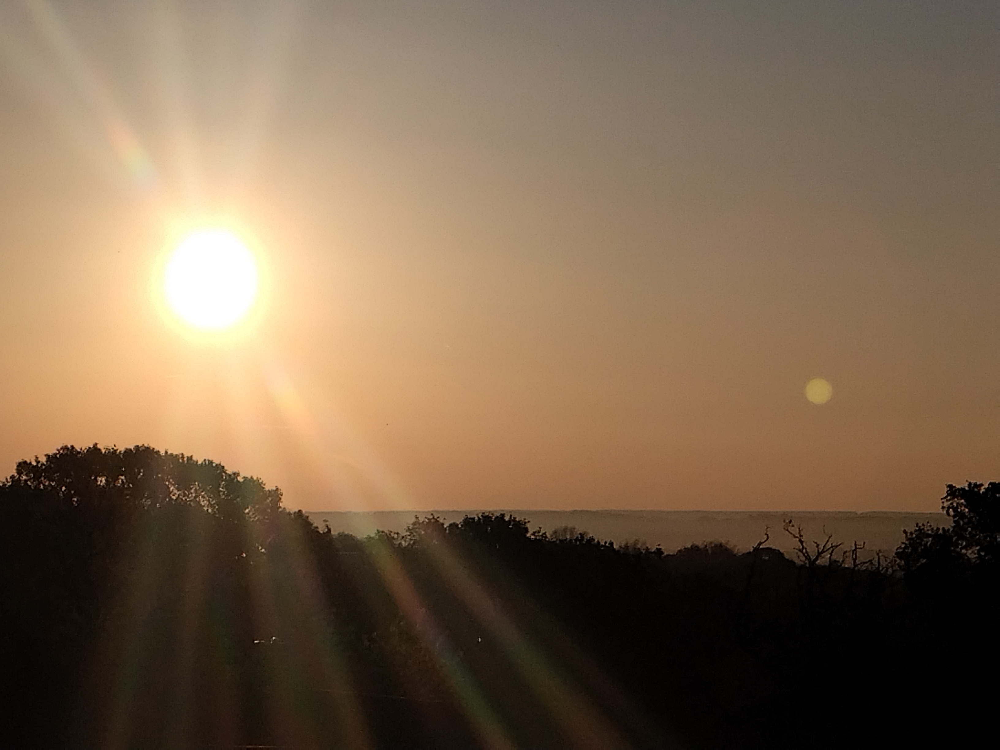

A personal space to think
Exeter, 29 May 2026
The repository for this website started in 2020, although it was not until the end of 2021 that it became a proper site.
Having spent most of my career in the UK so far, I suppose I was introduced fairly early to the need to cultivate a so-called personal brand. My publication profiles and the various academic webpages and social media accounts I have maintained over the years have already served that purpose, but I have generally found most of them more time-consuming than engaging.
So, in time, I ended up creating my own space. Being a child of the 1990s, I suspect part of me always wanted something resembling the personal websites of that era. This is, of course, a professional webpage, but it is also ultimately a personal one. A place for both research and the sporadic thought that seems worth sharing. I like it this way.
The website has undergone several changes over the years. The largest overhaul took place during the summer of 2025, a period of significant transition in my life. That change transformed the clean, old-fashioned template I had originally purchased into a mobile-friendly site created from scratch, with some help from ChatGPT for the core code. The end result inevitably retained traces of my millennial inheritance and the days of Myspace.
Yet, despite all these changes, the core principles I wrote down in the first versions have remained fairly constant across iterations. A Ship of Theseus of sorts, one might say.
For example, while I spent much of my formative years drawn to mathematics, philosophy, and literature, I eventually found myself attracted to theoretical physics because of the need to seek rational accounts of the natural phenomena that shape our experience, using mathematics to extract meaning from empirical data. If anything, time and information have never ceased to fascinate me.
As I progressed through my PhD — those wonderful days at Sussex — and began to appreciate how powerful it is to view probability theory as an extension of logical reasoning, it gradually became clear to me that it provides perhaps the most effective framework available for connecting physical theories with experiments. Combined with a strong inclination towards logical consistency, it became difficult to avoid the conclusion that progress in understanding often emerges simply from identifying inconsistencies and resolving them.
Finding the work of Jaynes on probability theory in 2016 certainly played a significant role. I remember immediately connecting it to lessons in propositional logic and epistemology at my high school almost exactly ten years earlier. In retrospect, this path has irreversibly changed the way I do physics.
At the same time, I do not see science as a purely abstract pursuit. While it is perhaps neither fashionable nor strategic these days to present oneself as a thinker — heaven forbid motivations other than practicality, even when my own work is, ironically, highly practical due to its applications in quantum technologies — I aim for research that identifies principles and brings clarity, while translating both into useful methodology, which I regard as a key societal contribution of theoretical work.
Since many of these ideas first crystallised during my initial professional years in Exeter, it seemed appropriate to dedicate a brief entry to them now that I find myself back in one of my favourite cities in the UK. Looking across the many places where I have lived during the last decade, Exeter is a point of continuity in an otherwise international life. It is one of the few places to which I have repeatedly returned, and one that remains closely associated with some of the most productive periods of my career to date.
In that sense, the photographs below, taken in Exeter last month, seem a fitting way to close this reflection.

